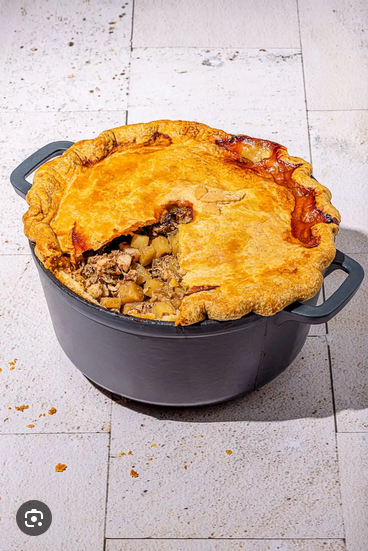

Home
Tourtiere

Desription
This is a classic quebecois dish that will warm the whole family during the hard winter time. Do not mix up with a meat pie.
Especially good with Ketchup !
Ingredients
- 2 pounds of pork butt, cubed
- 2 pounds of beef, cubed
- 4 chicken breast, cubed
- 3 big onions, diced
- 5 pounds of potatoes in small cubes
- 2 large pie dough
- Salt and pepper
- Chicken stock
Steps
- Preheat the oven at 400ºF
- In a large bowl, mix the meat, onions, and potatoes. Add salt and pepper
- Spread the dough at the base of a large casserole
- Put the meat preperation and cover with chicken stock. Cover with the rest of the dough
- Cook for 1 hour
- Reduce to 325ºF and cook for 3 hours. Add chicken stock if needed
- Reduce to 300ºF and cook for 1 to 2 hours.